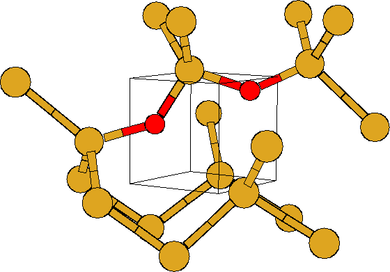

Annealing OV centres at 300 C or above leads to their breakdown
and the formation of VO2. However, a set of careful annealing
experiments by Londos et al after neutron bombardment
[97,98] showed that at 272-340
C or above leads to their breakdown
and the formation of VO2. However, a set of careful annealing
experiments by Londos et al after neutron bombardment
[97,98] showed that at 272-340 C in long time
anneals (4-5 hours), a pair of LVMs at 914 and 1000 cm-1 appear.
As the 889 cm-1 VO2 line grows, these two peaks anneal out.
These peaks are only seen when the material is initially neutron
bombarded; electron irradiation does not lead to these pre-cursors.
C in long time
anneals (4-5 hours), a pair of LVMs at 914 and 1000 cm-1 appear.
As the 889 cm-1 VO2 line grows, these two peaks anneal out.
These peaks are only seen when the material is initially neutron
bombarded; electron irradiation does not lead to these pre-cursors.
|  |
They speculated that these modes were due to a metastable intermediate
structure consisting of a VO centre with a neighbouring Oi, which
forms when VO diffuses through the lattice to a Oi atom. This then
has to overcome an energy barrier to form VO2. We modelled the
proposed structure with Oi in a Si-Si bond neighbouring the Si-O-Si
of the VO centre, in the same  110
110 plane. This is the natural
bond site for the Oi to adopt if it is not yet in the vacancy,
since the bond is dilated and also highly polarised due to the
neighouring Os. The shared Si atom is able to move into the
vacancy towards Os, so that the Si-O bond lengths of both O atoms
are very similar (this behaviour also occurs in VO3). The Oi has
an outer Si-O bond of 1.73 Å and a shared Si-O bond of 1.64 Å,
Os also has an outer bond of 1.73 Å but its shared bond is
slightly longer at 1.68 Å. Both have Si-O-Si bond angles of
138
plane. This is the natural
bond site for the Oi to adopt if it is not yet in the vacancy,
since the bond is dilated and also highly polarised due to the
neighouring Os. The shared Si atom is able to move into the
vacancy towards Os, so that the Si-O bond lengths of both O atoms
are very similar (this behaviour also occurs in VO3). The Oi has
an outer Si-O bond of 1.73 Å and a shared Si-O bond of 1.64 Å,
Os also has an outer bond of 1.73 Å but its shared bond is
slightly longer at 1.68 Å. Both have Si-O-Si bond angles of
138 . The resultant vibrational modes are given in
Table 5.2.
. The resultant vibrational modes are given in
Table 5.2.
As can be seen, the modes are in reasonable agreement with experiment.
However, the LVMs are highly sensitive to the position of the shared
central Si atom sitting between the two O atoms. Moving this Si atom
along  -0.053,0.011,-0.011
-0.053,0.011,-0.011 Å, less than 0.08 Å towards
the Oi, causes the modes to shift into excellent alignment with
experiment, as can be seen from the table. There is currently no
isotopic shift data available on these peaks.
Å, less than 0.08 Å towards
the Oi, causes the modes to shift into excellent alignment with
experiment, as can be seen from the table. There is currently no
isotopic shift data available on these peaks.
| 16Oi-16Os | 16Oi-18Os | 18Oi-16Os | 18Oi-18Os |
| 4lRelaxed | |||
| 926 | 17 | 9 | 41 |
| 886 | 26 | 33 | 45 |
| 656 | 25 | 3 | 30 |
| 4lShifted Shared Si | |||
| 994 | 3 | 35 | 42 |
| 905 | 39 | 10 | 46 |
| 656 | 24 | 4 | 31 |
| 4lExperimental | |||
| 1000 | |||
| 914 |